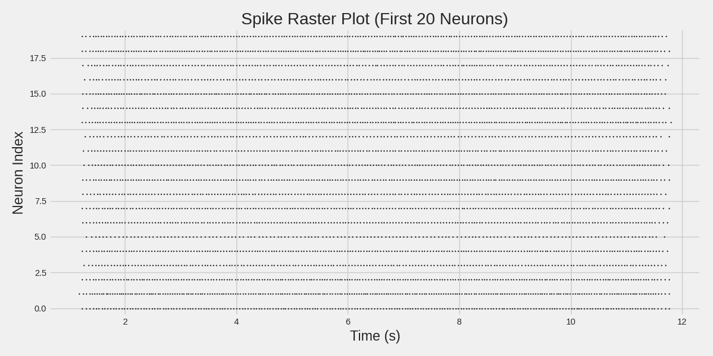
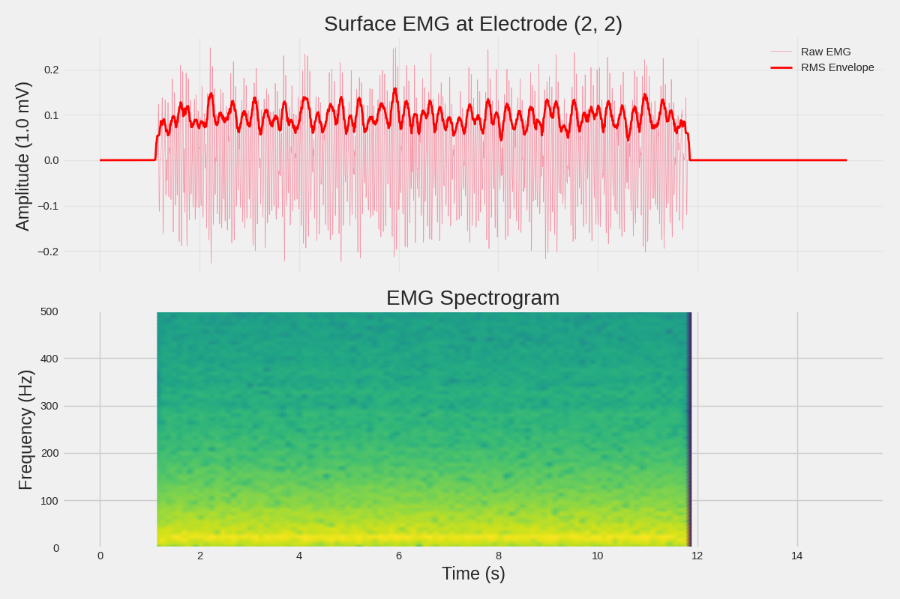

Note
Go to the end to download the full example code.
Extracting Data from Neo Blocks#
This example demonstrates how to extract and work with data from the different Neo Block types used in MyoGen:
Each section shows practical code for accessing and analyzing the data.
Import Libraries#
from pathlib import Path
import elephant.statistics
import joblib
import matplotlib.pyplot as plt
import numpy as np
import seaborn as sns
from myogen.utils.types import (
INTRAMUSCULAR_EMG__Block,
INTRAMUSCULAR_MUAP__Block,
SPIKE_TRAIN__Block,
SURFACE_EMG__Block,
SURFACE_MUAP__Block,
)
plt.style.use("fivethirtyeight")
sns.set_palette("husl")
Setup Paths#
save_path = Path("./results")
# Check which files exist
files_to_check = {
"spike_trains": save_path / "trapezoid_dd_spike_trains.pkl",
"surface_muaps": save_path / "surface_muaps.pkl",
"surface_emg": save_path / "surface_emg_signals.pkl",
"intramuscular_muaps": save_path / "intramuscular_muaps.pkl",
"intramuscular_emg": save_path / "intramuscular_emg.pkl",
}
available_files = {name: path for name, path in files_to_check.items() if path.exists()}
print("Available data files:")
for name, path in available_files.items():
print(f" ✓ {name}: {path.name}")
print("\nMissing data files (run respective examples first):")
for name, path in files_to_check.items():
if name not in available_files:
print(f" ✗ {name}: {path.name}")
Available data files:
✓ spike_trains: trapezoid_dd_spike_trains.pkl
✓ surface_emg: surface_emg_signals.pkl
Missing data files (run respective examples first):
✗ surface_muaps: surface_muaps.pkl
✗ intramuscular_muaps: intramuscular_muaps.pkl
✗ intramuscular_emg: intramuscular_emg.pkl
Example 1: Extracting Spike Train Data#
if "spike_trains" in available_files:
print("\n" + "=" * 70)
print("EXAMPLE 1: SPIKE_TRAIN__Block")
print("=" * 70)
# Load spike train block
spike_train__Block: SPIKE_TRAIN__Block = joblib.load(available_files["spike_trains"])
print(f"\nBlock name: {spike_train__Block.name}")
print(f"Number of segments (motor pools): {len(spike_train__Block.segments)}")
# Access first motor pool
motor_pool = spike_train__Block.segments[0]
print(f"\nMotor pool: {motor_pool.name}")
print(f"Number of neurons: {len(motor_pool.spiketrains)}")
# Analyze individual neuron
neuron_idx = 0
spiketrain = motor_pool.spiketrains[neuron_idx]
print(f"\nNeuron {neuron_idx}:")
print(f"\tName: {spiketrain.name}")
print(f" Number of spikes: {len(spiketrain)}")
print(f" Sampling rate: {spiketrain.sampling_rate}")
print(f" Duration: {spiketrain.t_stop}")
if len(spiketrain) > 0:
spike_times__s = spiketrain.magnitude
print(f" First spike: {spike_times__s[0]:.4f} s")
print(f" Last spike: {spike_times__s[-1]:.4f} s")
# Calculate firing rate
firing_rate = elephant.statistics.mean_firing_rate(spiketrain)
print(f" Mean firing rate: {firing_rate:.2f}")
# Calculate statistics across all neurons
firing_rates = []
active_neurons = 0
for st in motor_pool.spiketrains:
if len(st) > 0:
rate = elephant.statistics.mean_firing_rate(st)
firing_rates.append(rate.magnitude)
active_neurons += 1
if firing_rates:
print("\nMotor pool statistics:")
print(f" Active neurons: {active_neurons}/{len(motor_pool.spiketrains)}")
print(f" Mean firing rate: {np.mean(firing_rates):.2f} Hz")
print(f" Std firing rate: {np.std(firing_rates):.2f} Hz")
print(f" Range: {np.min(firing_rates):.2f} - {np.max(firing_rates):.2f} Hz")
# Plot raster plot
fig, ax = plt.subplots(figsize=(12, 6))
for neuron_idx, st in enumerate(motor_pool.spiketrains[:20]): # First 20 neurons
if len(st) > 0:
spike_times = st.magnitude
ax.scatter(spike_times, [neuron_idx] * len(spike_times), s=1, c="black")
ax.set_xlabel("Time (s)")
ax.set_ylabel("Neuron Index")
ax.set_title("Spike Raster Plot (First 20 Neurons)")
ax.set_ylim(-0.5, 19.5)
plt.tight_layout()
plt.savefig(save_path / "spike_raster.png", dpi=150)
print(f"\nSaved raster plot to: {save_path / 'spike_raster.png'}")

======================================================================
EXAMPLE 1: SPIKE_TRAIN__Block
======================================================================
Block name: Trapezoidal DD Spike Trains
Number of segments (motor pools): 1
Motor pool: Motor Neurons
Number of neurons: 100
Neuron 0:
Name: MN_0
Number of spikes: 214
Sampling rate: 10000.0 Hz
Duration: 15.0 s
First spike: 1.2382 s
Last spike: 11.7640 s
Mean firing rate: 14.27 1/s
Motor pool statistics:
Active neurons: 76/100
Mean firing rate: 12.04 Hz
Std firing rate: 3.08 Hz
Range: 0.13 - 16.53 Hz
Saved raster plot to: results/spike_raster.png
Example 2: Extracting Surface MUAP Data#
if "surface_muaps" in available_files:
print("\n" + "=" * 70)
print("EXAMPLE 2: SURFACE_MUAP__Block")
print("=" * 70)
# Load MUAP block
muaps__Block: SURFACE_MUAP__Block = joblib.load(available_files["surface_muaps"])
print(f"\nNumber of electrode arrays: {len(muaps__Block.groups)}")
# Access first electrode array
electrode_array = muaps__Block.groups[0]
print(f"\nElectrode array: {electrode_array.name}")
print(f"Number of MUAPs: {len(electrode_array.segments)}")
# Access a specific MUAP
muap_idx = min(5, len(electrode_array.segments) - 1)
muap_segment = electrode_array.segments[muap_idx]
muap_signal = muap_segment.analogsignals[0]
print(f"\nMUAP {muap_idx} ({muap_segment.name}):")
print(f" Shape: {muap_signal.shape}")
print(f" Time samples: {muap_signal.shape[0]}")
print(f" Electrode grid: {muap_signal.shape[1]} rows × {muap_signal.shape[2]} columns")
print(f" Sampling rate: {muap_signal.sampling_rate}")
print(f" Duration: {muap_signal.t_stop}")
print(f" Units: {muap_signal.units}")
# Extract MUAP from center electrode
center_row = muap_signal.shape[1] // 2
center_col = muap_signal.shape[2] // 2
center_muap = muap_signal[:, center_row, center_col]
print(f"\nMUAP at center electrode ({center_row}, {center_col}):")
print(f" Peak-to-peak: {np.ptp(center_muap.magnitude):.3f} {center_muap.units}")
print(f" Max amplitude: {np.max(np.abs(center_muap.magnitude)):.3f} {center_muap.units}")
# Find peak time and create spatial map
peak_time_idx = np.argmax(np.abs(muap_signal.magnitude))
peak_time_idx = np.unravel_index(peak_time_idx, muap_signal.shape)[0]
spatial_map = muap_signal[peak_time_idx, :, :].magnitude
# Plot MUAP waveform and spatial distribution
fig, (ax1, ax2) = plt.subplots(1, 2, figsize=(14, 5))
# Waveform at center electrode
time__s = muap_signal.times.magnitude
ax1.plot(time__s * 1000, center_muap.magnitude, linewidth=2) # Convert to ms
ax1.set_xlabel("Time (ms)")
ax1.set_ylabel(f"Amplitude ({muap_signal.units})")
ax1.set_title(f"MUAP {muap_idx} at Center Electrode")
ax1.grid(True, alpha=0.3)
# Spatial distribution at peak time
im = ax2.imshow(spatial_map, cmap="seismic", aspect="auto")
ax2.set_xlabel("Electrode Column")
ax2.set_ylabel("Electrode Row")
ax2.set_title(f"Spatial Distribution at t={time__s[peak_time_idx] * 1000:.1f}ms")
plt.colorbar(im, ax=ax2, label=f"Amplitude ({muap_signal.units})")
plt.tight_layout()
plt.savefig(save_path / "surface_muap_analysis.png", dpi=150)
print(f"\nSaved MUAP analysis to: {save_path / 'surface_muap_analysis.png'}")
Example 3: Extracting Surface EMG Data#
if "surface_emg" in available_files:
print("\n" + "=" * 70)
print("EXAMPLE 3: SURFACE_EMG__Block")
print("=" * 70)
# Load surface EMG block
surface_emg__Block: SURFACE_EMG__Block = joblib.load(available_files["surface_emg"])
print(f"\nNumber of electrode arrays: {len(surface_emg__Block.groups)}")
# Access first electrode array
electrode_array = surface_emg__Block.groups[0]
print(f"\nElectrode array: {electrode_array.name}")
print(f"Number of motor pool segments: {len(electrode_array.segments)}")
# Access first motor pool
motor_pool = electrode_array.segments[0]
emg_signal = motor_pool.analogsignals[0]
print(f"\nMotor pool: {motor_pool.name}")
print(f" EMG shape: {emg_signal.shape}")
print(f" Time samples: {emg_signal.shape[0]}")
print(f" Electrode grid: {emg_signal.shape[1]} rows × {emg_signal.shape[2]} columns")
print(f" Sampling rate: {emg_signal.sampling_rate}")
print(f" Duration: {emg_signal.t_stop}")
# Extract EMG from specific electrode
row, col = 2, 2
electrode_emg = emg_signal[:, row, col]
time__s = emg_signal.times.magnitude
print(f"\nEMG at electrode ({row}, {col}):")
print(
f" RMS amplitude: {np.sqrt(np.mean(electrode_emg.magnitude**2)):.3f} {electrode_emg.units}"
)
print(f" Peak-to-peak: {np.ptp(electrode_emg.magnitude):.3f} {electrode_emg.units}")
# Calculate RMS envelope with moving window
window_size = int(0.1 * emg_signal.sampling_rate.magnitude) # 100ms window
emg_magnitude = np.squeeze(electrode_emg.magnitude) # Ensure 1D array
rms_envelope = np.array(
[
np.sqrt(
np.mean(emg_magnitude[max(0, i - window_size // 2) : i + window_size // 2] ** 2)
)
for i in range(len(emg_magnitude))
]
)
# Plot EMG signal and RMS envelope
fig, (ax1, ax2) = plt.subplots(2, 1, figsize=(12, 8), sharex=True)
# Raw EMG
ax1.plot(time__s, emg_magnitude, linewidth=0.5, alpha=0.7, label="Raw EMG")
ax1.plot(time__s, rms_envelope, linewidth=2, color="red", label="RMS Envelope")
ax1.set_ylabel(f"Amplitude ({emg_signal.units})")
ax1.set_title(f"Surface EMG at Electrode ({row}, {col})")
ax1.legend()
ax1.grid(True, alpha=0.3)
# Spectrogram
from scipy import signal as scipy_signal
f, t, Sxx = scipy_signal.spectrogram(
emg_magnitude,
fs=emg_signal.sampling_rate.magnitude,
nperseg=min(256, len(emg_magnitude) // 4),
)
ax2.pcolormesh(t, f, 10 * np.log10(Sxx), shading="gouraud", cmap="viridis")
ax2.set_ylabel("Frequency (Hz)")
ax2.set_xlabel("Time (s)")
ax2.set_title("EMG Spectrogram")
ax2.set_ylim(0, 500) # Focus on relevant frequency range
plt.tight_layout()
plt.savefig(save_path / "surface_emg_analysis.png", dpi=150)
print(f"\nSaved EMG analysis to: {save_path / 'surface_emg_analysis.png'}")

======================================================================
EXAMPLE 3: SURFACE_EMG__Block
======================================================================
Number of electrode arrays: 1
Electrode array: ElectrodeArray_0
Number of motor pool segments: 1
Motor pool: Pool_0
EMG shape: (30720, 5, 5)
Time samples: 30720
Electrode grid: 5 rows × 5 columns
Sampling rate: 2048.0 Hz
Duration: 15.0 s
EMG at electrode (2, 2):
RMS amplitude: 0.081 1.0 mV
Peak-to-peak: 0.474 1.0 mV
Saved EMG analysis to: results/surface_emg_analysis.png
Example 4: Extracting Intramuscular MUAP Data#
if "intramuscular_muaps" in available_files:
print("\n" + "=" * 70)
print("EXAMPLE 4: INTRAMUSCULAR_MUAP__Block")
print("=" * 70)
# Load intramuscular MUAP block
im_muaps__Block: INTRAMUSCULAR_MUAP__Block = joblib.load(available_files["intramuscular_muaps"])
print(f"\nNumber of MUAPs: {len(im_muaps__Block.segments)}")
# Access a specific MUAP
muap_idx = min(3, len(im_muaps__Block.segments) - 1)
muap_segment = im_muaps__Block.segments[muap_idx]
muap_signal = muap_segment.analogsignals[0]
print(f"\nMUAP {muap_idx} ({muap_segment.name}):")
print(f" Shape: {muap_signal.shape}")
print(f" Time samples: {muap_signal.shape[0]}")
print(f" Number of electrodes: {muap_signal.shape[1]}")
print(f" Sampling rate: {muap_signal.sampling_rate}")
print(f" Duration: {muap_signal.t_stop}")
# Extract MUAP from all electrodes
n_electrodes = muap_signal.shape[1]
# Plot MUAPs from all electrodes
fig, axes_raw = plt.subplots(n_electrodes, 1, figsize=(10, 2 * n_electrodes), sharex=True)
# Convert to list for consistent indexing (matplotlib returns Axes or array of Axes)
axes_to_use = [axes_raw] if n_electrodes == 1 else list(axes_raw) # type: ignore
time__s = muap_signal.times.magnitude
for electrode_idx in range(n_electrodes):
electrode_muap = muap_signal[:, electrode_idx]
peak_amplitude = np.max(np.abs(electrode_muap.magnitude))
ax = axes_to_use[electrode_idx]
ax.plot(time__s * 1000, electrode_muap.magnitude, linewidth=2)
ax.set_ylabel(f"E{electrode_idx}\n({muap_signal.units})")
ax.grid(True, alpha=0.3)
ax.set_title(
f"Electrode {electrode_idx} (Peak: {peak_amplitude:.2f} {muap_signal.units})",
fontsize=10,
)
axes_to_use[-1].set_xlabel("Time (ms)")
plt.suptitle(f"Intramuscular MUAP {muap_idx} - All Electrodes")
plt.tight_layout()
plt.savefig(save_path / "intramuscular_muap_analysis.png", dpi=150)
print(f"\nSaved MUAP analysis to: {save_path / 'intramuscular_muap_analysis.png'}")
Example 5: Extracting Intramuscular EMG Data#
if "intramuscular_emg" in available_files:
print("\n" + "=" * 70)
print("EXAMPLE 5: INTRAMUSCULAR_EMG__Block")
print("=" * 70)
# Load intramuscular EMG block
im_emg__Block: INTRAMUSCULAR_EMG__Block = joblib.load(available_files["intramuscular_emg"])
print(f"\nNumber of motor pool segments: {len(im_emg__Block.segments)}")
# Access first motor pool
motor_pool = im_emg__Block.segments[0]
emg_signal = motor_pool.analogsignals[0]
print(f"\nMotor pool: {motor_pool.name}")
print(f" EMG shape: {emg_signal.shape}")
print(f" Time samples: {emg_signal.shape[0]}")
print(f" Number of electrodes: {emg_signal.shape[1]}")
print(f" Sampling rate: {emg_signal.sampling_rate}")
print(f" Duration: {emg_signal.t_stop}")
# Extract EMG from first electrode
electrode_idx = 0
electrode_emg = emg_signal[:, electrode_idx]
print(f"\nEMG at electrode {electrode_idx}:")
print(
f" RMS amplitude: {np.sqrt(np.mean(electrode_emg.magnitude**2)):.3f} {electrode_emg.units}"
)
print(f" Peak-to-peak: {np.ptp(electrode_emg.magnitude):.3f} {electrode_emg.units}")
# Calculate single differential EMG between adjacent contacts
n_electrodes = emg_signal.shape[1]
if n_electrodes > 1:
differential_emg = np.zeros((emg_signal.shape[0], n_electrodes - 1))
for i in range(n_electrodes - 1):
differential_emg[:, i] = (emg_signal[:, i + 1] - emg_signal[:, i]).magnitude
print(f"\nDifferential EMG calculated ({n_electrodes - 1} channels)")
print(
f" Differential channel 0 RMS: {np.sqrt(np.mean(differential_emg[:, 0] ** 2)):.3f} {emg_signal.units}"
)
# Plot monopolar and differential EMG
fig, (ax1, ax2) = plt.subplots(2, 1, figsize=(12, 8), sharex=True)
time__s = emg_signal.times.magnitude
# Monopolar EMG
ax1.plot(time__s, electrode_emg.magnitude, linewidth=0.5)
ax1.set_ylabel(f"Amplitude ({emg_signal.units})")
ax1.set_title(f"Monopolar EMG - Electrode {electrode_idx}")
ax1.grid(True, alpha=0.3)
# Differential EMG
ax2.plot(time__s, differential_emg[:, 0], linewidth=0.5, color="orange")
ax2.set_ylabel(f"Amplitude ({emg_signal.units})")
ax2.set_xlabel("Time (s)")
ax2.set_title(f"Differential EMG - Electrodes {electrode_idx} to {electrode_idx + 1}")
ax2.grid(True, alpha=0.3)
plt.tight_layout()
plt.savefig(save_path / "intramuscular_emg_analysis.png", dpi=150)
print(f"\nSaved EMG analysis to: {save_path / 'intramuscular_emg_analysis.png'}")
Total running time of the script: (0 minutes 1.635 seconds)